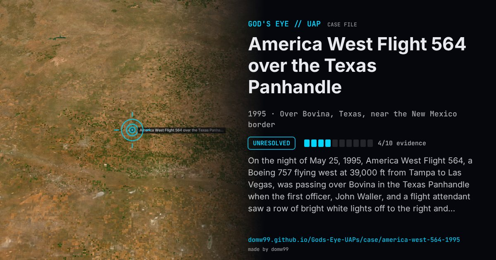

America West Flight 564 over the Texas Panhandle

On the night of May 25, 1995, America West Flight 564, a Boeing 757 flying west at 39,000 ft from Tampa to Las Vegas, was passing over Bovina in the Texas Panhandle when the first officer, John Waller, and a flight attendant saw a row of bright white lights off to the right and below, flashing in sequence from left to right. When lightning lit the thunderclouds behind it, the crew saw a dark, wingless, cigar-shaped silhouette, which they estimated at 300 to 400 ft long, though its distance was unknown. Waller asked Albuquerque Center about traffic; the controllers had nothing on their radar and called NORAD, which reported a track that later proved to be a small aircraft with a faulty transponder. The next morning a controller said NORAD had tracked another target that stopped and accelerated repeatedly, but that was never confirmed. Walter Webb investigated for the Fund for UFO Research, interviewed the crew and the controllers and obtained the FAA tapes, and found no explanation; the SETI astronomer Seth Shostak later remarked that bright planets fool trained pilots, without analysing this case.
What was seen
Shape: A row of white lights flashing in sequence; a long, dark, cigar-shaped silhouette against lightning
Witnesses: The crew of a Boeing 757: the first officer, the captain and a flight attendant; Albuquerque Center controllers
Duration: Several minutes
Sources
- The America West case: Walter Webb’s investigation (transcribed)
- The Black Vault — America West Flight 564 case file
Browse
- United States
- 1990s
- Unresolved
- Aviation encounters
- Pilot and aircrew witnesses
- Radar tracking
- Audio recordings or radio transcripts
- Lights and fireballs
- Cylinders and cigar shapes
- Formations and rows of lights